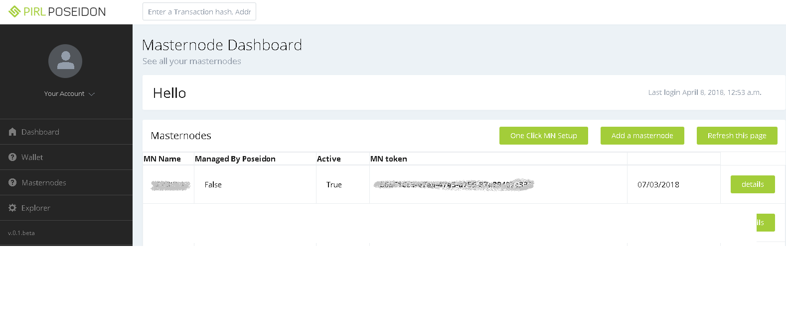
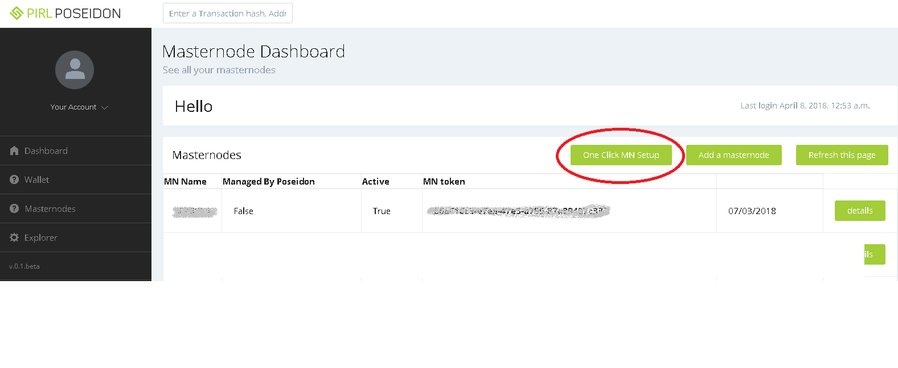
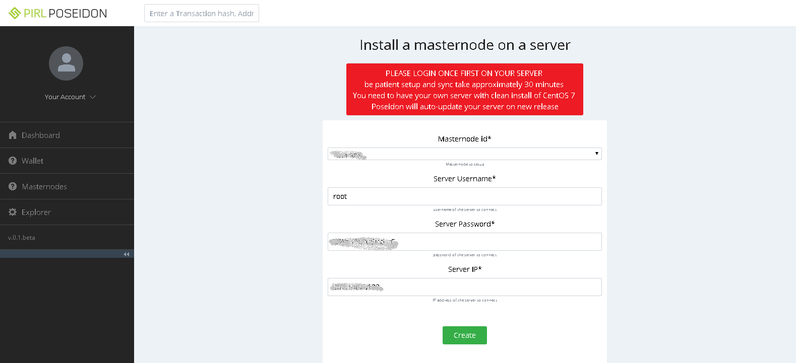
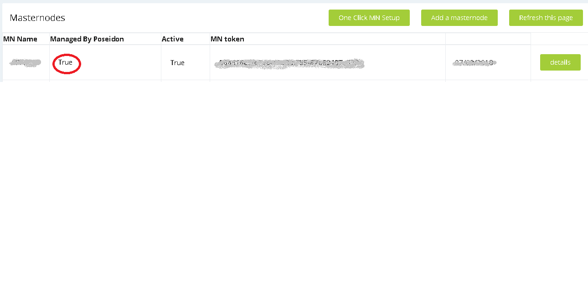
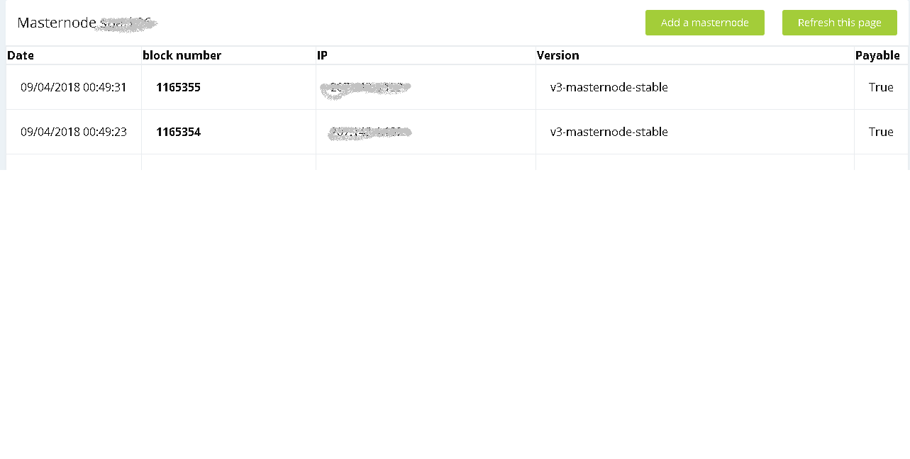

Overview
This guide uses the one-click-masternode setup feature. This is an optional feature for those that wish to have a more hands-off experience with masternode mining. This Poseidon feature automatically configures your CentOS linux server to be a Pirl Masternode Miner. Updates will be applied automatically. All you have to do is monitor your server to ensure it stays operational. This is as simple as rebooting the server, should it come offline. Before using this guide, please refer to the official Pirl Masternode Setup Tutorial to complete the pre-requisites.
Prerequisites
We assume you have completed the following tasks, based on the offical Pirl Masternode Setup Tutorial.
- a. Downloaded and installed the latest Pirl Nautilus Wallet and created a wallet account/address (see tutorial).
- b. Created a Poseidon account (see tutorial).
- c. Sent 20001 Pirl to the Pirl Nautilus wallet address in step (a.) (see tutorial).
- d. Sent a small amount of Pirl (0.5) from your Nautilus wallet address to your Poseidon wallet address and recorded the transaction hash (see tutorial).
- e. Configured your Nautilus wallet account to 'watch' the Pirl Masternode contract and deposit 20000 Pirl into the contract address (see tutorial).
- f. Added the Masternode entry in Poseidon (see tutorial)
- g. Waited until the Masternode is issued a valid MN token (which will occur automatically. This may take a couple of hours to complete.)
-- STEP 1 -- Verify Masternode Entry
Verify your Poseidon Masternode record has been created properly
2/. The "MN Token" should look something like: a1234567-90a1-2b34-56e7-1234f5dfe6cb. If you do not see a valid 'Masternode Token' value, wait a few hours. If the problem continues, obtain assistance via Pirl's Discord channel
3/. If all pre-requisites have been completed successfully, you should see the following screen shot :

-- STEP 2 --
Create/Launch CentOS linux server
1/. Verify that the server meets the appropriate specifications as noted in the Pirl Masternode Setup Tutorial.
2/. The server MUST use the CentOS version of linux.
3/. Record of the static/public IP address of the server as well as the root password. We do recommend logging into that server 1x to ensure the 'root' credentials work.
It is not necessary to take any other actions in the server. In fact, it's preferred that you don't make any other adjustments, whatsoever.
-- STEP 3 --
Configure One-Click MN Setup
Ensure you have the public/static IP address and 'root' credentials before proceeding with this step
1/. Login to Poseidon, and on the left hand menu, choose Masternodes -> My Masternodes. You should see the following:

2/. Click the 'One-Click MN Setup' button and complete all fields.

3/. After returning to the 'My Masternodes' screen, you should see that your masternode entry for 'Managed by Poseidon' is set to 'True'.

4/. Please allow 30 minutes for the configuration to finish. You can click the 'details' button to monitor the status.
5/. While we don't necessarily encourage active access on the server, if you wish to check the status, log into your
server and issue the following command:
# journalctl -f
You should see status messages. Click CTRL+C to exit the journal/log screen.
6/. Monitor the status of your Masternode miner by checking the Poseidon Masternode details page. A functioning miner should appear as follows (however, the version may be different than is shown in the screen shot below):

--Troubleshooting / FAQ--
I waited 30 minutes for the 'one-click MN setup' to complete, but the Masternode Details page is still blank
- Contact the Pirl development team in the Discord channel
Should I be concerned that I gave away root level credentials?
- This should not be a concern if the only purpose for the linux server is to act as a Pirl Masternode. If you are using the same server for other purposes, we don't recommend you use this feature.
- It shouldn't be necessary for you to actively manage this server. For that reason, use a very-difficult 'root' level password. Do not user a password that you use on other systems.
Do I have to perform any updates?
- No. Poseidon will take care of this for you. All you have to do is monitor your servers uptime and ensure the Masternode details page is showing current transactions.